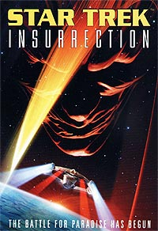
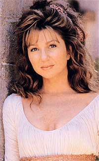
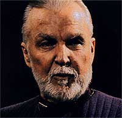
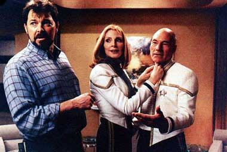
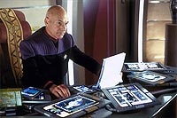
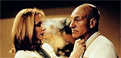
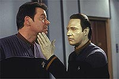
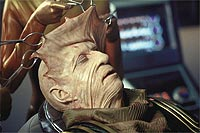

|
A
Insurreição que saiu pela culatra
Era uma vez um povo
que vivia muito feliz, com 600 pessoas num planeta distante. Eles
habitavam um povoado paradisíaco e rústico com os afazeres das
vilas pré-industriais --não porque faltasse tecnologia, mas por
que eles simplesmente não a apreciavam.
Um belo dia, sua vida é perturbada por um andróide desvairado e um
monte de disparos de raios feiser. Depois disso, a vida virou um
inferno, cujos demônios são alguns dos oficiais da Frota Estelar e
um bando de gente malvada e desfigurada --os Son'a.
 A
Federação é passada para trás. Através de seu Conselho, ela
aprovou um projeto de cooperação sem saber muito bem como e por
que, num momento onde estava passando por sérios problemas com os
Cardassianos, Romulanos e Dominion, conforme a série Deep Space
Nine contou na televisão.
Este é o enredo de um samba tocado mais uma vez pela equipe de
produção da Paramount para "Jornada Nas Estrelas -
Insurreição". Patrick Stewart foi a estrela e um produtor
associado. O roteiro foi de Michael Piller, com história criada por
ele e Rick Berman, e remexida pelo próprio Stewart.
 Herman
Zimmerman trabalhou na cenografia e a trilha sonora foi composta por
Jerry Goldsmith. A direção coube mais uma vez a Jonathan Frakes
(William Riker). Na época de lançamento eles disseram ser o filme
uma mistura de "Horizonte Perdido" com "O Morro dos
Ventos Uivantes". A primeira proposta de título foi
"Primeira Diretriz" ("Prime Directive"), nome
mais adequado, só que menos comercial.
Picard e Data estão mais uma vez no centro da trama. A ação
deles, para o bem ou para o mal, determina o rumo das coisas. É a
tentativa de proteger os Baku, combater os Son'a e salvar a Federação
das mãos dos aproveitadores e de um almirante ingênuo.
 No
meio de tudo isso, a tripulação da Enterprise-E experimenta o
rejuvenescimento propiciado pela atmosfera do planeta Baku: a
doutora Crusher sente os seios mais firmes, La Forge passa a
enxergar normalmente, Worf retorna à puberdade, Troi e Riker se
sentem novamente apaixonados e Picard se envolve com a nativa Anij
de modo tão feliz que até dança um mambo (de forma meio
"esquisita", diga-se de passagem).

As cenas são boas,
engraçadas, mas há alguns absurdos e exageros como a nave que
solta rastilho de pólvora à la versão original de "Flash
Gordon" ou a cantoria de Picard e Data no "karaokê"
de bolinhas saltitantes.
 Pior
ainda foi o "joystick" manipulado por Riker na ponte da
nave para fazer uma perigosíssima manobra espacial. Não devemos
esquecer também de Data no fundo de um lago cheio de peixinhos em
busca da nave equipada com um holodeck.
Adiciona-se a isso o gritinho de raiva de Ru'afo, o líder dos
Son'a, quando sentiu que estava perdendo a parada e a briga de família
com os Baku. Pelo menos Picard deu a tônica na luta com o vilão:
"estamos ficando velhos demais para isso". É uma boa
sinalização de que a tripulação precisa da sombra e da água de
coco fresca de Risa.
 Acontece
que a cena provavelmente mais representativa do título do filme só
tem efeito dramático no trailer. Picard tirou suas divisas e o
uniforme, junto com a parte da tripulação que desceu ao planeta e
teve o apoio de Riker e dos demais.
Só que Kirk, Sisko, Janeway e seus comandados já fizeram mais do
que isso, sem tanto alarde. Enfim, a produção poderia ser mais
caprichada e não seguir o comportamento dos produtores de
"Babylon 5" nos cenários das naves Son'a, quando usaram e
abusaram do acrílico.
 Mas
alguns momentos se salvam --afinal, é um filme de Jornada nas
Estrelas (ímpar, é claro)! Com todos os defeitos, ainda é melhor
do que muito do que temos visto por aí.
Vemos o diálogo de Data com o menino Baku, assustado e fascinado
pelo andróide. Eles conversam sobre a infância e a maturidade
quando o garoto lhe dá um bom conselho: não se esquecer de brincar
todos os dias. Como tudo deve acabar bem, há a reconciliação dos
filhos não tão pródigos com seus pais.
 De
todo modo, os atores convidados funcionaram bem e não
comprometeram. F. Murray Abraham na pele de Ru'afo se saiu bem de
novo como vilão. Os coadjuvantes Gregg Henry (Gallatin), Daniel H.
Kelly (Sojef), Anthony Zerbe (almirante Doughety) e Michael Welch (o
menino Artim) se salvam. A oficial Trill na ponte da Enterprise-E não
é das piores, mas me fez chorar de saudades da querida tenente
Jadzia Dax. Assim mesmo, choveu bem na horta da tesouraria da
Paramount.
Cláudio
Silveira escreve regularmente sobre os filmes com
exclusividade para o Trek Brasilis
|